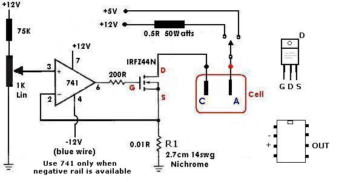
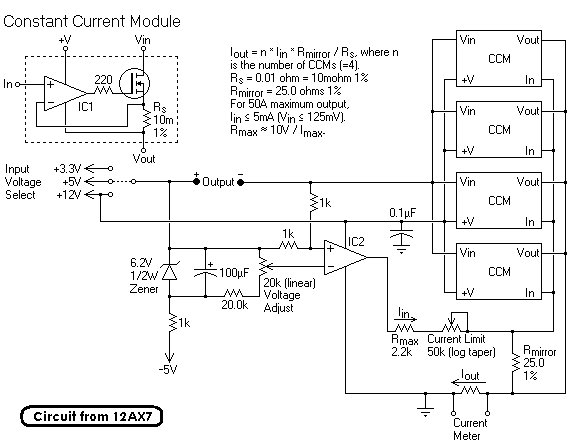
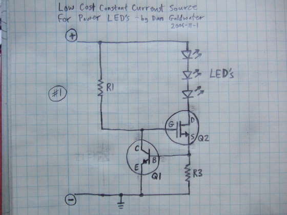

The 5 volt outputs can
supply serious current, 25 amps and more. Some are short circuit protected some not, shorting the non protected one's will kill
supply. They have a tendency not to come into operation if a load is not connected to the 5 Volt output and sometimes if no load
is connected to 12v. Simply connect your cell up first and then turn on the supply or you can put a resistor across the supply to
draw about 2 Amps (2.5 Ohms, 10 Watts resistor) or a 12V bulb. This can be removed when you get the cell running. You may need to connect
a load (resistor or bulb) permanently to the 12v if you are only using the 5v wires. It varies from unit to unit. Some of the modern units
have a 3.3v supply which may suffice if you have a large area of electrodes in your cell.
Sometimes 5 Volts can put too
much current into
your cell and in that case you can put a power diode in series with the line. The diode will drop about 1 volt giving you 4 volts for
the cell. Make sure the Diode is capable of carrying the current and it will also need a heat sink. You can use two (or 3 or 4)
diodes if current is still too high. You could also use a high wattage resistor. Remember Ohms law. V = I X R
You can also use the 12 Volt outputs
of the supply if the 5 Volts is not driving enough current into you cell. You will have to use diodes or resistors in this case to lower
the Voltage seen by the cell or too much current will flow. The 12 Volt outputs cannot put out as much current as the 5 Volt outputs
but they are still capable of putting out quite a respectable current. Get a meter to measure the current and don't abuse the
supply. It may go into shut down mode if you draw too much current.
A good way to measure the current is to put a low value resistor in series with the line, say 0.01 Ohms. The Voltage measured
across this resistor will be related to the current going through it by the formula (Ohms law!!) V = I X R, or if you like I = V/R. If you
measure 0.1 Volts across the resistor there will be 10Amps going into cell. Make sure the resistor has high enough Wattage. It
should have a minimum wattage = (max. likely current into cell)squared X R. You can make a resistor out of some resistance
wire from an old electric fire.
It is possible to put
two of theses supplies in parallel and isolate each supply from the rest by
putting in a diodes into both leads from the supply's. You may have to use identical units (which may be hard to come by) so that
the current is shared equally between units. Do not run the combined units at the max. new possible combined current as the
supplies will probably not share the current equally among themselves.
Another alternative for using
computer supplies in parallel is to connect all positives to the anode and connect each negative to a separate Cathode. The Cathodes should be of equal size and spacing from the Anode and from each other. Diodes should also be placed in each supply to help isolate each supply and stop current being driven into one supply from another.
According to pdfbq over on www.AmateurPyro.com computer power supplies can be connected in parallel without any diodes. Just simply connect the red wires (5V) together and the black wires together. The problem that occurs is that it is impossible to turn on the power supplies at exactly the same time. As soon as the first supply turns on it will be overloaded (by the low resistance load, a large cell in this case) and shut down. You must remove the Anode (or Cathode or both) from the cell, turn on the paralleled supplies and then lower the electrodes slowly into the cell so that each supply can take up its fair share of the load as the current builds up. You could also put a resistor in series with the cell that can be switched out of the circuit as soon as you get all the power supplies switched on and running at the full current.
There is lots of info about using computer power supplies as bench power supplies(cell supply) on the net. See here
The standard color code (there is an alternative Dell, see below) for the wires is:
Red = +5V, Black = Ground (0V), White = -5V, Yellow = +12V, Blue = -12V, Orange = +3.3V, Purple = +5V Standby (not used), Gray = power is on (output), and Green = Turn DC on (input, tie to Black), Brown = 3.3v sense (tie to Orange).
The Dell non-standard (see Wiki.) has no green wire. The green is replace with grey. Orange is 'power good', as there is no 3.3 Volts out. Red and black are 5V and Ground as before.
Note about computer supplies: One thing about power supplies. In my setup a modified computer PSU works perfect. Old UNIX servers sometimes have PSUs up to 250 A at 5V. While higher output voltage of 6.4 V instead of 5 V is not really a problem, overriding the over- and under-voltage protection can be a pain. With PC-PSUs it sometimes helps to disconnect all other voltages (12V and negatives)at the rectifier diodes to prevent damage. If there is even a under-voltage protection on these you should discard the PSU and look for another one. Follow back the massive copper lines for +5V on the PCB and there will normally be connected one small line for the loop-back (voltage regulation). Disconnect this line and reconnect it with a low ohmic voltage divider (i.e 100 Ohm to ground, 28 Ohm to Output). After that modification the PSU will think to produce 5V while its 6.4 V. ;-)
A very useful and simple add-on for a computer power supply is a constant current module.
The built add-on could perhaps be small enough to fit inside the case of the computer power supply which will make the whole thing very compact though when a heatsink is added to the MOSFET the add-on is inclined to be larger. It may be possible to attach the MOSFET to the CPS case (for heat sinking) using an insulating mounting kit.

A 741 can be used or an LM358 or a CA3140.
The MOSFET will require a heatsink. The IRFZ44 is OK for 50 Watts which will allow it to supply approx. 15 Amps into a cell when using the 5 Volts output of the CPS. Use a larger device if more current is required or use a diode to help dissipate (drop Volts) heat elsewhere. The MOSFET should have approx. two Volts accross it so that there is a comfortable 'surplus' Voltage to keep the current constant should cell Voltage rise. The 0.5 Ohm resistor can be made from 4 parallel strands of 28 SWG Nichrome wire each 7cm long or four strands of 28 SWG Constantin wire each 29cm long. You could also use a 6 Volt 50 to 80 Watt bulb.
Use a switch between the green wire and earth (black) to switch the power supply on and off.
A piece of Copper wire 1mm diameter and 50 cm long can be used for R1 if you have no 0.01 Ohm resistor or Nichrome wire to make it. The temperature coefficient of Copper is very poor but the current will not drift too much due to normal temperature variations.

The Constant Current module will work on its own if that is all you need.
The following is taken from http://www.instructables.com/id/EK2XAPS11GEWOF2YSD/ without kind permission.
It was designed by 'Dan's power LED projects'. It would be a useful constant current provider for a Chlorate cell.
Specifications:
input voltage: 2V to 18V
output voltage: up to 0.5V less than the input voltage (0.5V dropout)
current: 20 amps + with a large heatsink
Maximum limits:
the only real limit to the current source is Q2, and the power source used. Q2 acts as a variable resistor, stepping down the voltage from the power supply to match the need of the LED's. so Q2 will need a heatsink if there is a high LED current or if the power source voltage is a lot higher than the LED string voltage. with a large heatsink, this circuit can handle a LOT of power.
The Q2 transistor specified will work up to about 18V power supply. If you want more, look at my Instructable on LED circuits to see how the circuit needs to change.
With no heat sinks at all, Q2 can only dissipate about 1/2 watt before getting really hot - that's enough for a 200mA current with up to 3-volt difference between power supply and LED.
Circuit function:
- Q2 is used as a variable resistor. Q2 starts out turned on by R1.
- Q1 is used as an over-current sensing switch, and R3 is the "sense resistor" or "set resistor" that triggers Q1 when too much current is flowing.
- The main current flow is through the LED's, through Q2, and through R3. When too much current flows through R3, Q1 will start to turn on, which starts turning off Q2. Turning off Q2 reduces the current through the LED's and R3. So we've created a "feedback loop", which continuously tracks the current and keeps it exactly at the set point at all times.

HIT THE BACK BUTTON ON YOUR BROWSER